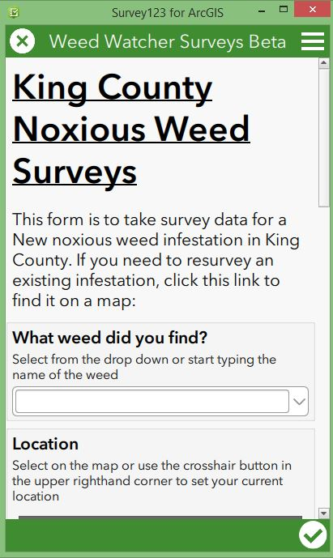
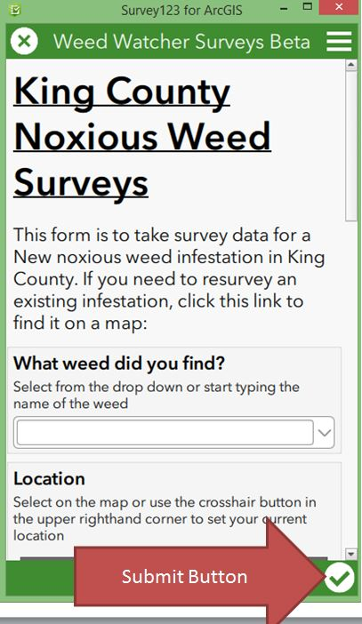

How to Collect Weed Watcher Data Using Survey123
What is Survey123?
Survey123 is an App that uses a simple form to take survey data that can be viewed on a map
Survey123 Features
- Free to download and use
- Works offline
- Use your phone or desktop computer
- Resurvey existing infestations
Follow the steps below to Download Survey123 and start mapping weeds
Step 1: Download the Survey123 App
Visit the Survey123 download page
Step 2: Open the Weed Watcher Form
Open the Weed Watcher form in Survey123 using this link: Weed Watcher Form The form Looks like this:
Step 3: Fill out the form and submit
Fill out the Form following the hints. Answering some questions will reveal questions relevant to your answer. Submit the form by clicking the check box in the bottom right corner
View Your Data
Visit the Collaboration Map page to view your data